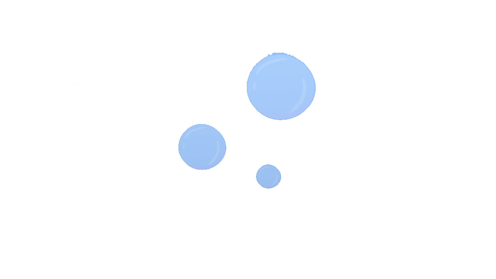
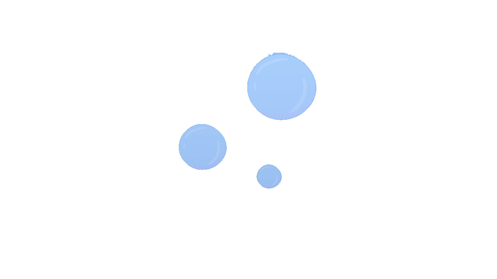
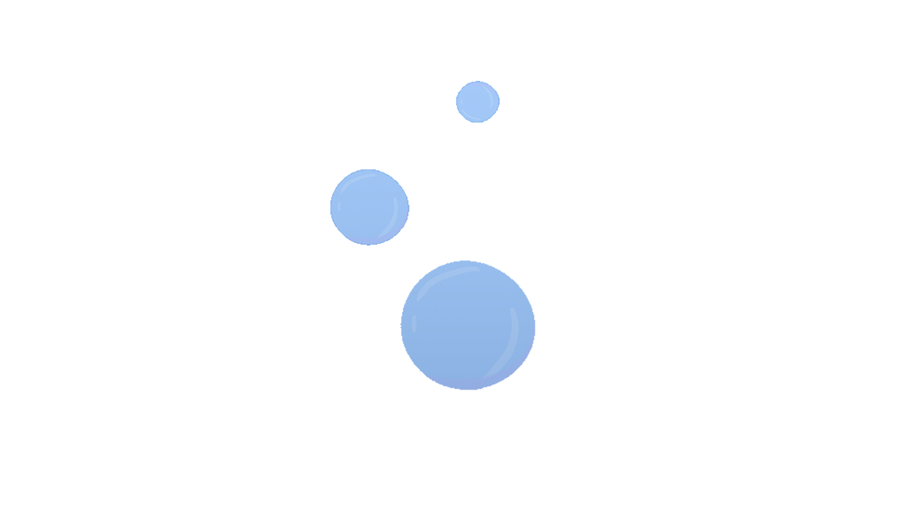
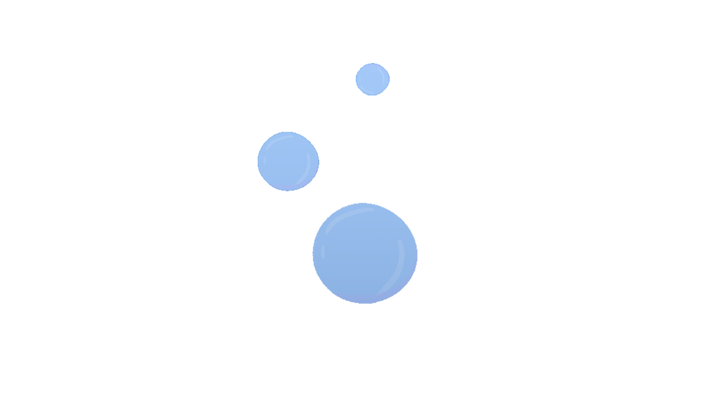
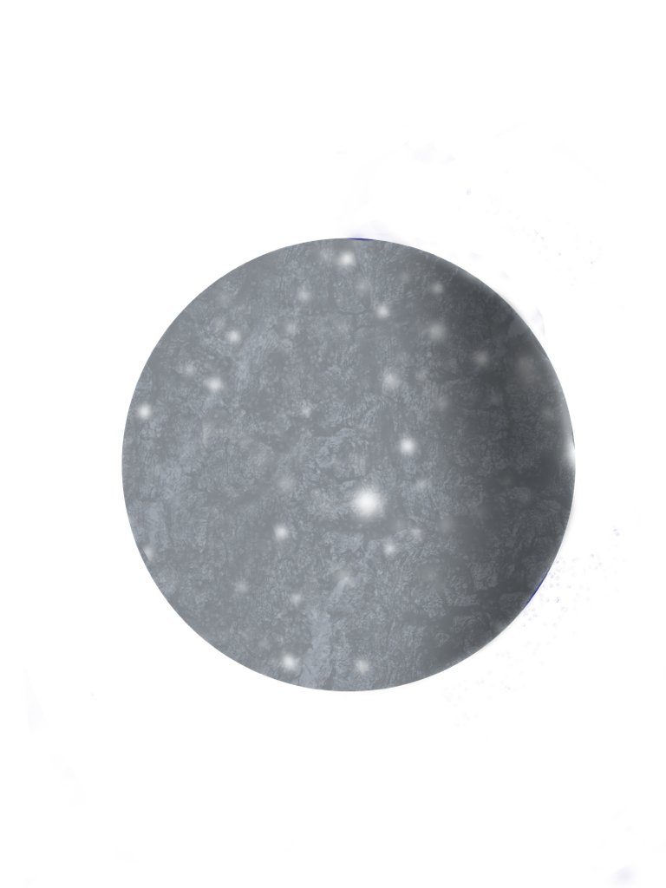
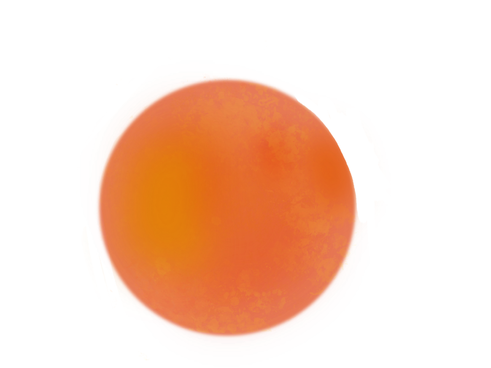
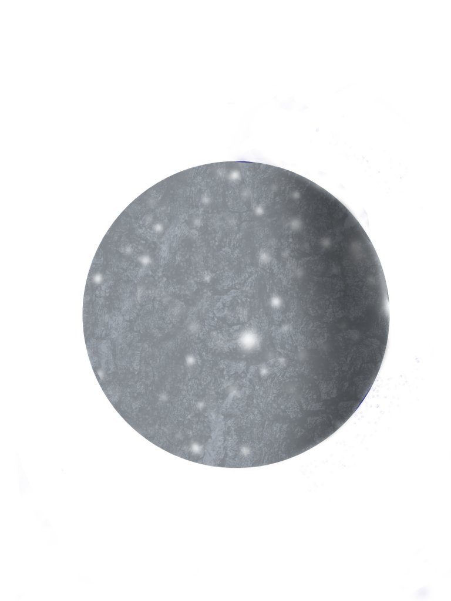
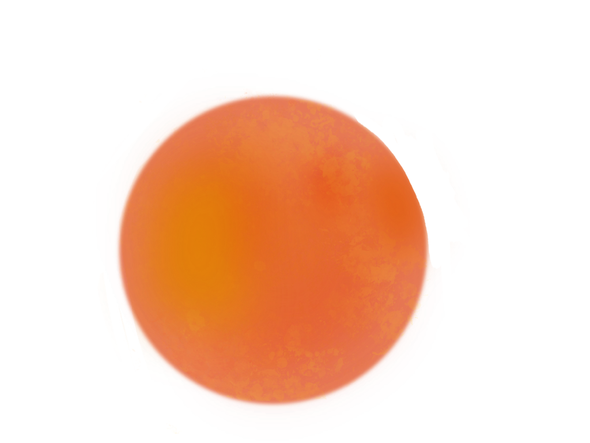

Billy veut aller trouver le légendaire poisson rouge.
Il essaye de recruter autrui pour son aventure,
mais sans aucune chance.
 



Déçu, Billy s'asseoit sur une roche, reposant son menton sur ses mains.
Soudainement, il aperçoit un coffre proche de lui, et il voit un médaillon sortir du trésor.

 

Dans le verre du médaillon, Billy remarque la réflection d'une jeune fille aux cheveux rouges. Curieuse, elle lui demande ce qu'il fait seul, et il lui raconte ses péripéties d'aujourd'hui.
Billy l'invite à le rejoindre pour l'aventure, et elle accepte avec plaisir.


Après une brève introduction, la sirène se présente sous le nom de Lola.
Par la suite, les deux jeunes aventuriers nagent à travers l'océan, à la recherche de la grotte du légendaire poisson rouge.


Quelques minutes plus tard,
Billy et Lola arrivent à l'entrée d'une grotte, sans doute celle du poisson rouge que Billy veut tant retrouver.


Ils entrent dans la grotte et trouvent le légendaire poisson rouge au fond de celle-ci. Le poisson annonce à Billy que la première personne à le trouver aura le droit à la réponse à n'importe quelle question qu'elle puisse avoir.
Billy présente le médaillon au poisson rouge et lui dit qu'il aimerait en savoir plus sur l'univers qui se retrouve à l'interieur. Le poisson hoche la tête avant de lui répondre qu'il pourrait faire mieux que simplement le lui expliquer.
 



Billy, Lola et le poisson rouge sont transportés dans le monde du médaillon que le poisson a nommé l'Espace.
Les jeunes enfants sont émmerveillés par l'univers autour d'eux, joyeux d'avoir complété leur aventure.